TFR e stipendi arretrati: come accedere al Fondo di garanzia INPS
Quando l'azienda fallisce o risulta insolvente, il lavoratore rischia di non vedere TFR e ultime retribuzioni. Interviene allora il Fondo di garanzia INPS. Una recente pronuncia de…

Condominio parziale: chi non usa il tetto non paga i lavori
Una recente pronuncia del Tribunale di Avellino ribadisce un principio spesso ignorato in assemblea: quando un tetto copre solo una porzione dell'edificio, le relative spese gravan…

Delibere condominiali: il peso dei millesimi conta più delle teste
La Cassazione torna su un punto cruciale per la vita assembleare: nelle delibere condominiali non basta contare i votanti. Serve verificare anche il peso millesimale, ossia la quot…

Fondi pensione e legge di Bilancio 2026: cosa sapere
La previdenza complementare torna al centro del dibattito con le misure annunciate nella legge di Bilancio 2026, tra ipotesi di adesione automatica ai fondi pensione e revisione de…
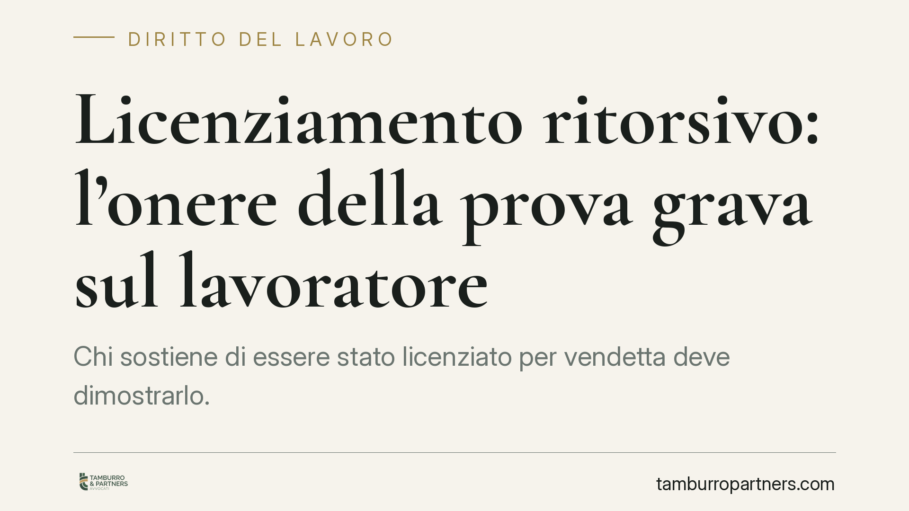
Licenziamento ritorsivo: l'onere della prova grava sul lavoratore
Chi sostiene di essere stato licenziato per vendetta deve dimostrarlo. È questo il principio ribadito dalla giurisprudenza: il licenziamento ritorsivo è nullo, ma spetta al lavorat…
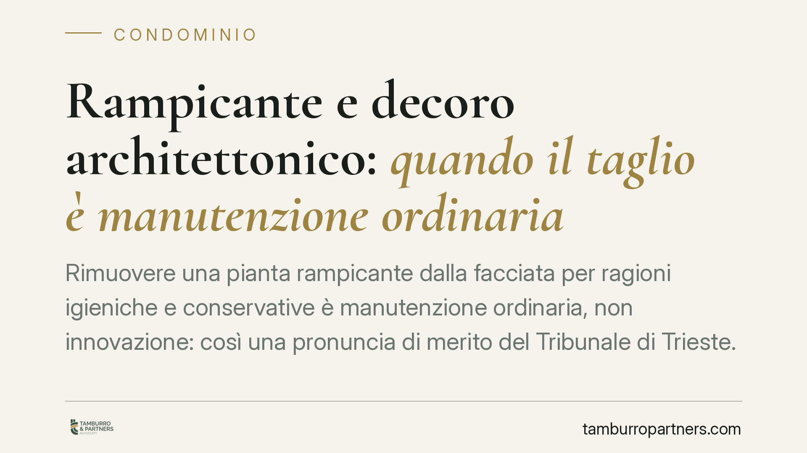
Rampicante e decoro architettonico: quando il taglio è manutenzione ordinaria
Rimuovere una pianta rampicante dalla facciata per ragioni igieniche e conservative è manutenzione ordinaria, non innovazione: così una pronuncia di merito del Tribunale di Trieste…
Servizio Civile Universale: il XXIV Rapporto CNESC e la riforma in arrivo
È prevista per il 18 giugno 2026, a Roma, la presentazione del XXIV Rapporto della CNESC sul Servizio Civile Universale. L'appuntamento arriva mentre è in discussione una nuova leg…
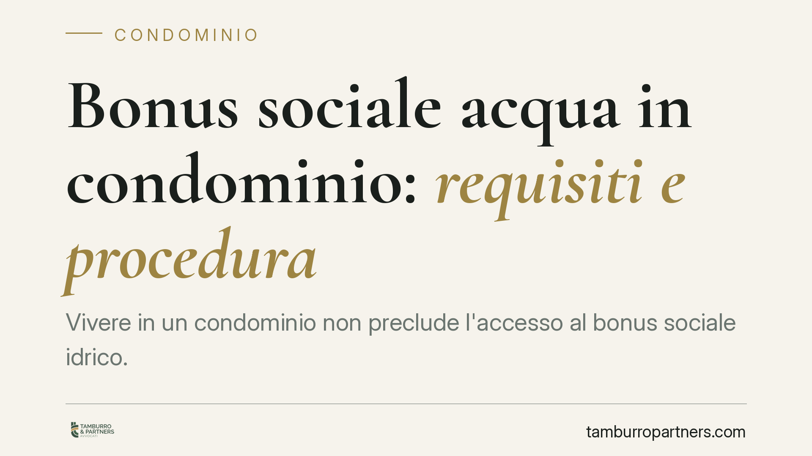
Bonus sociale acqua in condominio: requisiti e procedura
Vivere in un condominio non preclude l'accesso al bonus sociale idrico. I nuclei familiari con ISEE entro 9.796 euro possono ottenere lo sconto sulla spesa per l'acqua anche quando…
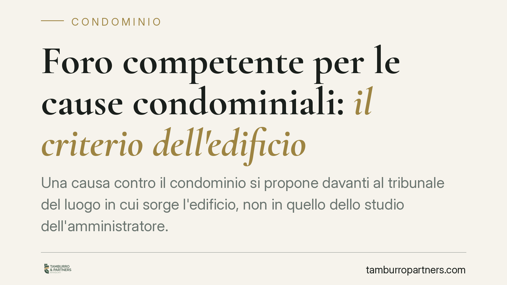
Foro competente per le cause condominiali: il criterio dell'edificio
Una causa contro il condominio si propone davanti al tribunale del luogo in cui sorge l'edificio, non in quello dello studio dell'amministratore. Il criterio non è uniforme: cambia…
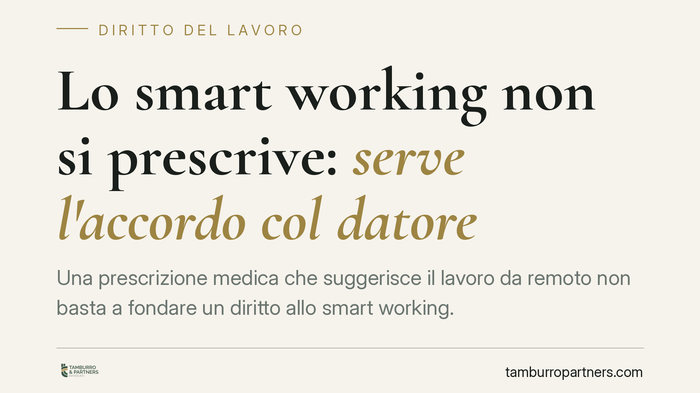
Lo smart working non si prescrive: serve l'accordo col datore
Una prescrizione medica che suggerisce il lavoro da remoto non basta a fondare un diritto allo smart working. In assenza di un accordo con il datore, il dipendente che non si prese…
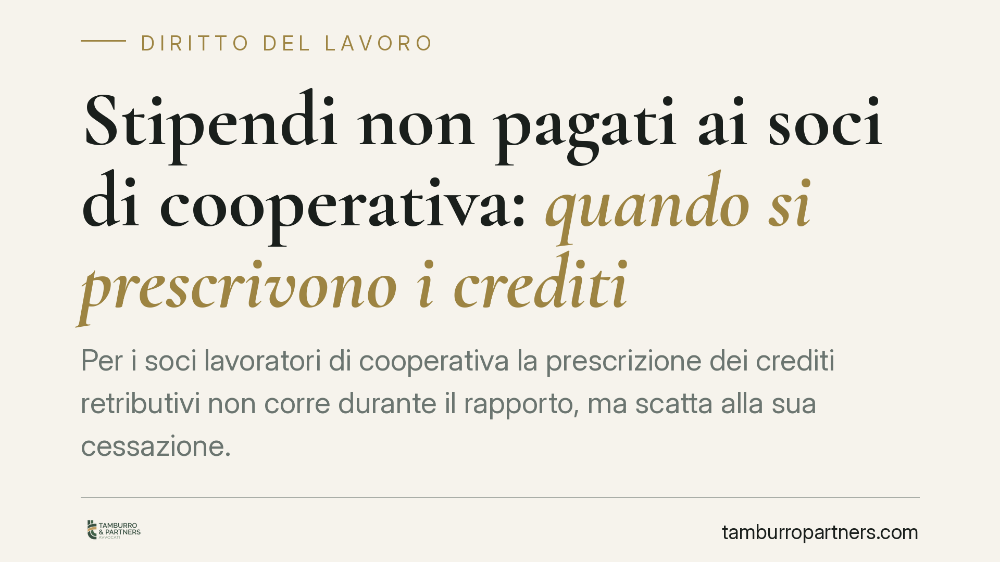
Stipendi non pagati ai soci di cooperativa: quando si prescrivono i crediti
Per i soci lavoratori di cooperativa la prescrizione dei crediti retributivi non corre durante il rapporto, ma scatta alla sua cessazione. È l'esito di un orientamento avviato dall…
ISCRO 2026: requisiti e domande per l'indennità INPS agli autonomi
L'INPS ha aperto le domande per l'ISCRO 2026, l'indennità rivolta ai lavoratori autonomi iscritti alla Gestione Separata che registrano un calo reddituale. Dal 2024 la misura è str…
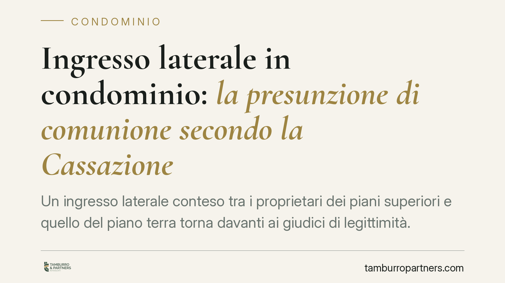
Ingresso laterale in condominio: la presunzione di comunione secondo la Cassazione
Un ingresso laterale conteso tra i proprietari dei piani superiori e quello del piano terra torna davanti ai giudici di legittimità. La Cassazione annulla la sentenza d'appello e r…
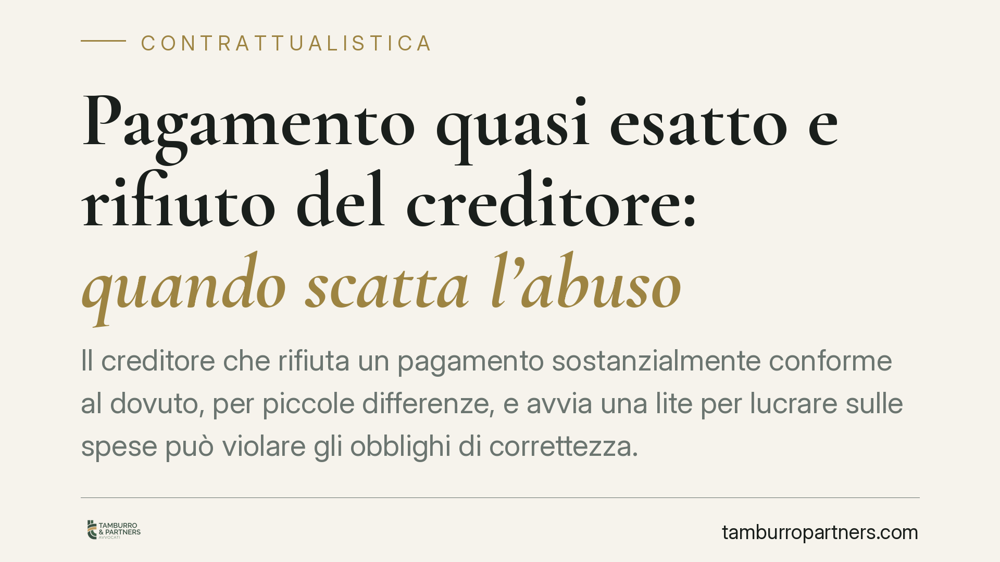
Pagamento quasi esatto e rifiuto del creditore: quando scatta l'abuso
Il creditore che rifiuta un pagamento sostanzialmente conforme al dovuto, per piccole differenze, e avvia una lite per lucrare sulle spese può violare gli obblighi di correttezza. …
Modifica delle tabelle millesimali: serve davvero l'unanimità?
Un dubbio frequente nelle assemblee: per cambiare i millesimi serve il consenso di tutti i condomini? La risposta non è scontata. La legge distingue tra tabelle approvate per contr…
Il locale caldaia resta comune se il riscaldamento viene dismesso?
Quando il riscaldamento centralizzato viene dismesso, il locale che ospitava la caldaia non diventa automaticamente di nessuno e nemmeno appropriabile dal singolo. Resta bene comun…
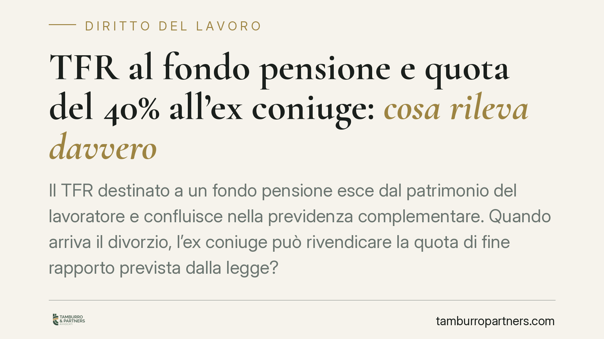
TFR al fondo pensione e quota del 40% all'ex coniuge: cosa rileva davvero
Il TFR destinato a un fondo pensione esce dal patrimonio del lavoratore e confluisce nella previdenza complementare. Quando arriva il divorzio, l'ex coniuge può rivendicare la quot…
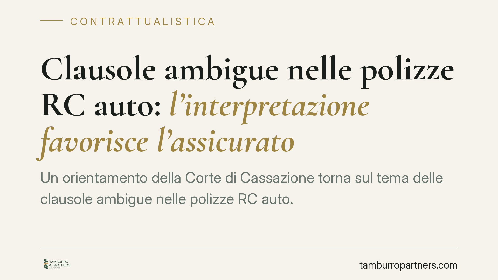
Clausole ambigue nelle polizze RC auto: l'interpretazione favorisce l'assicurato
Un orientamento della Corte di Cassazione torna sul tema delle clausole ambigue nelle polizze RC auto. Quando la previsione sull'abilitazione alla guida è formulata in modo oscuro,…
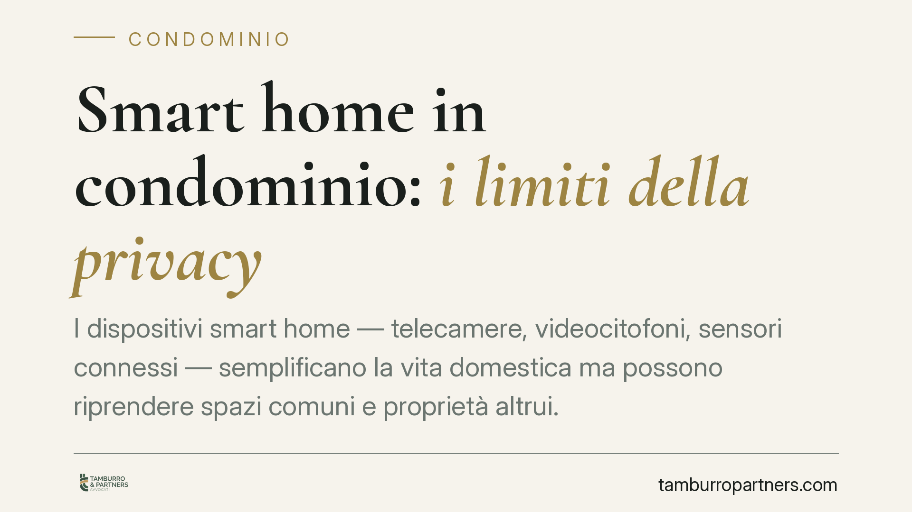
Smart home in condominio: i limiti della privacy
I dispositivi smart home — telecamere, videocitofoni, sensori connessi — semplificano la vita domestica ma possono riprendere spazi comuni e proprietà altrui. Quando ciò accade, il…

Compensi degli avvocati legati ai risultati: cosa prevede la delega forense
Un disegno di legge delega sull'ordinamento forense torna a discutere di compensi legati al risultato del caso e di nuovi meccanismi di responsabilità. Trattandosi di una delega in…

Infortunio del tecnico in casa: quando risponde anche il committente privato
Chi affida lavori a un tecnico in casa propria non è sempre estraneo alle conseguenze di un infortunio. La Cassazione penale ha confermato la condanna di una proprietaria per la mo…

Straining: quando lo stress da lavoro fa scattare il risarcimento
Non serve una persecuzione sistematica per ottenere un risarcimento. Anche una singola condotta stressante, se incide sulla salute del lavoratore, può fondare la responsabilità del…

Condizionatore alla finestra: il condominio non può vietarlo
La Corte di Cassazione torna sul tema dei climatizzatori installati sulle facciate. Il principio è netto: il condomino può montare l'unità esterna su spazi di sua proprietà esclusi…

Legge 104 e trasferimento per assistere il familiare disabile: un diritto non assoluto
La Legge 104 consente al lavoratore di chiedere il trasferimento nella sede più vicina al familiare disabile da assistere. Ma il diritto non è incondizionato: va bilanciato con le …

Convocazione dell'assemblea condominiale: l'amministratore deve allegare tutti i documenti?
L'amministratore non è obbligato ad allegare ogni documento alla convocazione dell'assemblea, soprattutto quando le materie sono già state trattate. Spetta al condomino chiederne v…

Licenziamento per giusta causa: quanto pesa il contratto collettivo?
La Corte di Cassazione torna sul rapporto tra giusta causa di licenziamento e contratto collettivo. Il giudice può ritenere giustificato un licenziamento anche se il CCNL non lo pr…

Mancata convocazione in assemblea: chi può impugnare la delibera
Un condomino regolarmente convocato può chiedere l'annullamento dell'assemblea perché un altro non ha ricevuto l'avviso? La giurisprudenza risponde di no: il vizio di convocazione …

Licenziamento durante la malattia: nullo se anteriore al comporto
Il licenziamento intimato mentre il lavoratore è ancora in malattia, prima che si sia esaurito il periodo di comporto, è nullo. La nullità opera anche se il datore ha sbagliato i c…

Vendita di casa e arretrati del portiere: chi paga i debiti condominiali
Chi compra un appartamento eredita anche gli arretrati del portiere lasciati dal venditore? Il Tribunale di Messina distingue tra obbligo di pagamento e ripartizione interna, ricor…

Falsa partita IVA: gli indici della subordinazione secondo la Cassazione
Una partita IVA non basta a qualificare un rapporto come autonomo. Quando orari fissi, compenso stabile e assenza di strumenti propri rivelano una vera subordinazione, il lavorator…